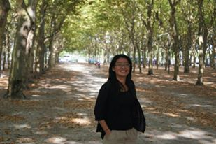

Never give up on what you really want to do. The person with big dreams is more powerful than one with all the facts (Albert Einstein)
NGUYEN NGOC KIM HANG
Informations personnelles
20 janvier 1986
Nationalité: Vietnamienne
Née à Danang, Vietnam
Habite en France depuis juin 2012
Résidence actuelle: Brunoy, France
Danang
est une ville de la région de la Côte centrale du Sud du Viêt Nam
Population: 900.000 habitants
Coordonnées géographiques: 16° 01′ 55″ nord, 108° 13′ 14″ est
une des destinations touristiques les plus importantes du Vietnam avec des belles plages, montagnes et rivières
Brunoy
Département: Essonne
Population: 214.000 habitants
Coordonnées géographiques: 48° 41′ 52″ nord, 2° 30′ 16″ est